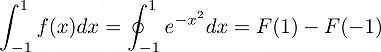

Práctica 4: Convolución y Correlación de señales en tiempo continuo
Contents
Datos generales:
Autores:
- Luis Enrique Hernandez Lugardo
- Silverio Jiménez Cesar Antonio
Objetivos:
- Conocer métodos básicos de integración numérica
- Manipulación de instrucciones en MATLAB
- Simular convoluciones y correlaciones de señales continuas
Introducción
Elabore un reporte de los métodos descritos en la lista de reproducción que incluya el desarrollo de los ejemplos expuestos.
- 1. Métodos numéricos: Teorema fundamental del Cálculo, Integración 1 https://www.youtube.com/watch?v=OFHAN-WwLEw&t=2s
segun el teorema fundamental del calculo primero tendriamos que ver si es integrable. (Recordando que toda funcion continua es integrable en un intervalo cualquiera)

El problema que encontramos es que no existe una antiderivada
Considerando un polinomio.
Eligiendo aproximaf la funcion con el polinomio constante
- 2. Métodos numéricos: Newton-Cotes, regla del trapecio, Integración 2 https://www.youtube.com/watch?v=Fe79KWPf0Do&t=4s
Este método es eficiente si se conocen los valores de la función en puntos igualmente separados. Si se pueden cambiar los puntos en los cuales la función es evaluada otros métodos como la cuadratura de Gauss son probablemente más eficientes.
Funcion igual a un polinomio de grado 1,2,3...n que concide con la funcion en determinados puntos mas un termino de error
Formula cerrada de (n+1)puntos de Newton-Cotes, donde:
Debemos encontrar el valor de xi como parte real y parte imaginaria.
Realizamos la integral de la exponencial.
- 3. Métodos numéricos: Newton-Cotes, regla de Simpson, regla de 3/8 de Simpson, Integración 3 https://www.youtube.com/watch?v=Ykgdo9Sr354
Se utilizan los polinómios de intercalacion de lenguaje
formula cerrada de (n+1) puntos de Newton.
- 4. Métodos numéricos: regla del trapecio compuesta , regla de Simpson compuesta, Integración 4 https://www.youtube.com/watch?v=UJMZviPb6GE&t=1s
Formulas cerradas de newton-Cotes Compuestas se divide en varios trapecios para tener una mejor aproximacion de la función.

La regla compuesta del trapecio nos muestra la manupulacion del error de que los puntos intermedios se tengran que evaluar dos veces.

En la regla compuesta de simpson estamos restringidos a que el numero de subinterbalos sea par para que cada dos formen una parabola.

- 5. Métodos numéricos: Cuadratura Gaussiana, Integración 5 https://www.youtube.com/watch?v=6i4N328QbpY&t=3s

Desarrollo
Para el desarrollo se tienen que resolver cada uno de los siguientes problemas comenzando una nueva sección (para la publicación) en cada uno de ellos.
Problema 1 PR04
Realiza la convolución de las siguientes señales
La señal tiene como funcion analítica la siguiente imagen.

El resultado de cada grafica y su comvolucion es el siguiente.
clear all figure(12) subplot(1,3,1) syms t x1=piecewise(t<0,0,0<t<1,1-t,1<t<2,t-1,t>2,0); fplot(x1,[-1,3],'r') grid on title('g(t)') xlabel('t') ylabel('g(t)') axis([-3 3 -3 3]) subplot(1,3,2) x2=piecewise(t<0,0,0<t<1,1,t>1,0); fplot(x2,[0,3],'r') grid on title('h(t)') xlabel('t') ylabel('h(t)') axis([-2 2 -2 2]) x=@(t) ((-1*t)+1).*(t>=0&t<=1) + (t-1).*(t>1&t<=2); y=@(t) 1.*(t>=0&t<=1); t1=(0:0.01:1); t2=(1:0.01:2); t3=(2:0.01:3); subplot(1,3,3) hold on plot(t1,(t1-(t1.^2/2))) plot(t2,((t2.^2)-3*t2+5/2)) plot(t3,(-((t3.^2)/2)+2*t3-3/2)) grid on title('x(t)*h(t)') axis([-1 3.6 -2 2]);

Problema 3 PR04
Realiza la convolución de las siguientes señales
La señal tiene como funcion analítica la siguiente imagen.

El resultado de cada grafica y su comvolucion es el siguiente.
clear all figure(13) subplot(1,3,1) syms t x1=piecewise(t<0,0,0<t<1,t,1<t<2,1,t>2,0); fplot(x1,[-1,3],'r') grid on title('g(t)') xlabel('t') ylabel('g(t)') axis([-3 3 -3 3]) subplot(1,3,2) x2=piecewise(t<1,0,1<t<3,1,t>3,0); fplot(x2,[0,3],'r') grid on title('h(t)') xlabel('t') ylabel('h(t)') axis([-2 4 -2 2]) t1=(1:0.01:2); t2=(2:0.01:3); t3=(3:0.01:4); t4=(4:0.01:5); subplot(1,3,3) hold on plot(t1,(((t1-1).^2)/2)) plot(t2,(t2-(3/2))) plot(t3,(3/2-((t3-3).^2)/2)) plot(t4,5-t4) grid on title('x(t)*h(t)') axis([-1 7 -2 2]);


Problema e) PR06
Realice la autocorrelacion de la siguiente señal
Utiliza la equivalencia que prefieras
la función analítica queda de la siguiente forma:

figure (10) x1 = @(t) heaviside(t)-(2.*heaviside(t-3))+heaviside(t-4); % % Definimos un x1 x11 = @(t) heaviside(-t)-(2.*heaviside(-t-3))+heaviside(-t-4); % % La invertimos subplot (1,4,1) syms t fplot (x1,[-10,10], 'r') grid on title ('x1(t)') axis ([-10 10, -5 5 ]); figure(11) t=[-10:0.01:10]; plot (t, x11 (t)) grid on title('x11(t)') axis([-10 10 , -5 5]);
Problema f) PR06
Realiza la correlación de con las señales definidas en los ejercicios anteriores, utiliza la equivalencia que prefieras
la función analítica queda de la siguiente forma:

figure( 1 ) subplot (1,4,1) syms t x0 = @ (t) heaviside (t) - (2.*heaviside(t-2))+heaviside(t-4); fplot (x0,[-10 , 10], 'r' ) grid on title ( 'x0(t)' ) axis ([-10 10, -5 5]); subplot (1,4,2) x1 = @(t) heaviside(t)-( 2.*heaviside(t-3))+heaviside(t-4); fplot(x1, [-10 ,10 ], 'r' ) hold on title('x1(t)') axis ([-10 10, -5 5]);
haciendo a x1 (-t) en x2
x2 = @(t) heaviside(-t)-( 2.*heaviside (-t- 3 )) + heaviside (-t- 4 );